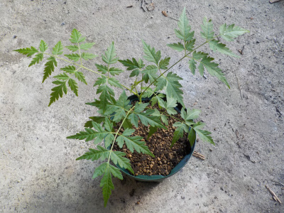
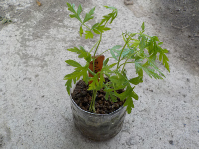
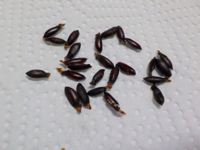
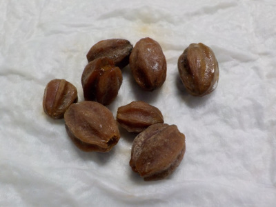
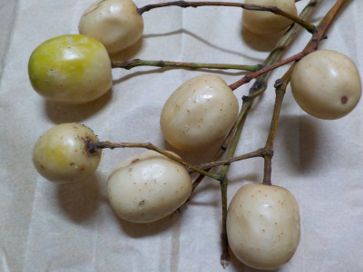

遊びで植物を育てよう
2021/06/20
センダンの鉢を大きくしました。

今までの鉢が小さく感じたので、一番大きくなった1本だけ鉢を大きくしました。
何本も育てるスペースはないので、他の苗は小さい鉢のまま置いておきます。
思い切って整理した方がいい気がしますが、決断できませんでした。
【センダンTOP】 【木TOP】 【園芸TOP】
2020/07/04
せんだんの芽が出ました。

種は沢山あってんですが、ちゃんと発芽したのは6本だけでした。
ひょろひょろで弱々しい苗です。
【センダンTOP】 【木TOP】 【園芸TOP】
2020/05/01
センダンの殻はカチカチで硬かったです。

栴檀の種はこんなのでした。
殻を割って種を出したんですが、殻がとても硬かったです。
自然に殻を割って発芽する力は凄いですね。
凄いけど家では発芽しなかったので、人工的に取り出しました。
発芽条件って何なんでしょうね。
【センダンTOP】 【木TOP】 【園芸TOP】
2020/03/19
センダンの種は変化なしです。

果肉を取り除いたセンダンの種です。
殻はまだガチガチに硬いです。
【センダンTOP】 【木TOP】 【園芸TOP】
2020/01/26
出雲大社でセンダンの実を拾いました。

出雲大社にセンダンの実が沢山落ちていたので、少し拾って帰りました。
育ててみようと思います。
【センダンTOP】
【木TOP】
【園芸TOP】
畑仕事じゃないよ。
【おいしいものを食べよう。】【しっかり寝よう。】
【ソロ活をしよう!】【季節感のあることをしよう。】【動画視聴はほどほどに。】【当サイトの全てのコンテンツは無断転載禁止です。】